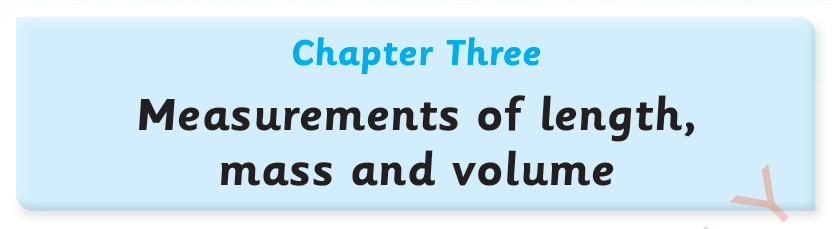

In this chapter, you will learn about the measurements of length, mass and volume. You will also be able to estimate and compare lengths, masses and volumes of different objects. The competencies developed will enable you to perform different activities related to measurements of length, mass, and volume.
Length is the distance between two points. It can be measured by using different tools. The measuring tools of length are of two types, namely non-standard and standard tools.
The use of non-standard measuring tools of length depends on the type of objects being measured. For example, the length of a chalkboard or table can be measured using non-standard tools such as handspan, stick, rope or footsteps.
Non-standard tools like a handspan do not give exact measurements because the obtained length will depend on the size of the person’s handspan. If two persons with different handspans measure the same table, they will get different lengths.
Therefore, a handspan is a non-standard tool. The following picture shows a pupil measuring the length of a table by handspan.